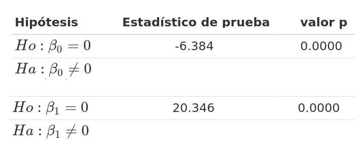

A continuación se presenta el código en R para estimar el modelo y validar los supuestos más importantes
library(paqueteMETODOS)
data(biomasa)
modelo=lm(bio_total ~ diametro, data=biomasa)
summary(modelo)Los resultados se presentan en cuatro partes :
\[\widehat{\text{bio_total}_{i}} = \widehat{\beta}_{0} + \widehat{\beta}_{1} \hspace{.2cm}\text{diametro}_{i}\]
Call: lm(formula = log(bio_total) ~ diametro, data = biomasa)
Residuals:
Min 1Q Median 3Q Max
-6.3775 -2.6594 0.0237 1.8758 11.9876
Coefficients:
Estimate Std. Error t value Pr(>|t|)
(Intercept) -9.0203 1.4129 -6.384 7.86e-09 ***
diametro 5.1026 0.2508 20.346 < 2e-16 ***
---
Signif. codes: 0 ‘***’ 0.001 ‘**’ 0.01 ‘*’ 0.05 ‘.’ 0.1 ‘ ’ 1
\[\widehat{\text{bio_total}_{i}} = -9.0203 + 5.1026 \hspace{.2cm} \text{diametro}_{i}\] Además se presentan los resultados de las pruebas de hipótesis individuales sobre los coeficientes:

Residual standard error: 3.435 on 88 degrees of freedom Multiple R-squared: 0.8247, Adjusted R-squared: 0.8227 F-statistic: 414 on 1 and 88 DF, p-value: < 2.2e-16
Este resultado muestra el valor del coeficiente de determinación (\(R^2\)) que corresponde al porcentaje de la variabilidad de \(Y\) explicada por el modelo. Para el ejemplo \(R^{2} = 0.8227\). indicando que el modelo explica un 82.27% de la variación de \(Y\).
\(H_o: \varepsilon \sim Normal\)
\(H_a: \varepsilon \hspace{.2cm} \text{ no } \sim Normal\)
shapiro.test(modelo$residuals)
Shapiro-Wilk normality test
data: modelo$residuals
W = 0.98394, p-value = 0.3338# install.packages("normtets")
# devtools::install_github("UBC-MDS/noRmtest", build_opts = c("--no-resave-data", "--no-manual"))
# https://cran.r-project.org/src/contrib/Archive/normtest/
library(normtest)
normtest::jb.norm.test(modelo$residuals)
Jarque-Bera test for normality
data: modelo$residuals
JB = 2.081, p-value = 0.2525# install.packages("nortets")
nortest::ad.test(modelo$residuals)
Anderson-Darling normality test
data: modelo$residuals
A = 0.29771, p-value = 0.5818nortest::lillie.test(modelo$residuals)
Lilliefors (Kolmogorov-Smirnov) normality test
data: modelo$residuals
D = 0.0623, p-value = 0.5281\(Ho : V[\varepsilon_{i}] = \sigma^2\)
\(Ha : V[\varepsilon_{i}] \neq \sigma^2\)
lmtest::bptest(modelo)
studentized Breusch-Pagan test
data: modelo
BP = 3.879, df = 1, p-value = 0.04889lmtest::gqtest(modelo)
Goldfeld-Quandt test
data: modelo
GQ = 1.1538, df1 = 43, df2 = 43, p-value = 0.3206
alternative hypothesis: variance increases from segment 1 to 2\(Ho : E[\varepsilon_{i}, \varepsilon_{j}] = 0\)
\(Ha : E[\varepsilon_{i}, \varepsilon_{j}] \neq 0\)
lmtest::dwtest(modelo)
Durbin-Watson test
data: modelo
DW = 0.67803, p-value = 1.716e-13
alternative hypothesis: true autocorrelation is greater than 0library(paqueteMETODOS)
data("biomasa")
modelo1=lm(bio_total ~ diametro, data=biomasa) # Lin - Lin
modelo2=lm(bio_total ~ log(diametro), data=biomasa) # Lin - Log
modelo3=lm(log(bio_total) ~ diametro, data=biomasa) # Log - Lin
modelo4=lm(log(bio_total) ~ log(diametro), data=biomasa) # Log - Loglibrary(stargazer)
stargazer(modelo1, modelo2, modelo3, modelo4, type="text", df=FALSE)
===============================================================
Dependent variable:
-------------------------------------------
bio_total log(bio_total)
(1) (2) (3) (4)
---------------------------------------------------------------
diametro 5.103*** 0.278***
(0.251) (0.011)
log(diametro) 23.369*** 1.344***
(1.564) (0.058)
Constant -9.020*** -19.909*** 1.328*** 0.618***
(1.413) (2.629) (0.060) (0.098)
---------------------------------------------------------------
Observations 90 90 90 90
R2 0.825 0.717 0.887 0.858
Adjusted R2 0.823 0.714 0.885 0.857
Residual Std. Error 3.435 4.362 0.145 0.162
F Statistic 413.961*** 223.224*** 687.562*** 532.232***
===============================================================
Note: *p<0.1; **p<0.05; ***p<0.01Los mejores indicadores los tiene el modelo (3) : log - lin
\[\widehat{\log(bio-total_{i})} = 1.328 + 0.278 \hspace{.3cm} diametro_{i}\]